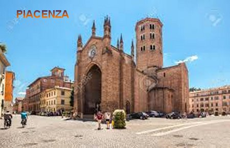
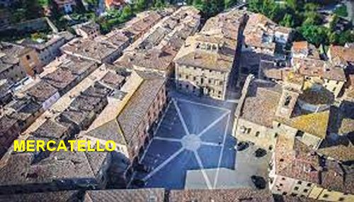
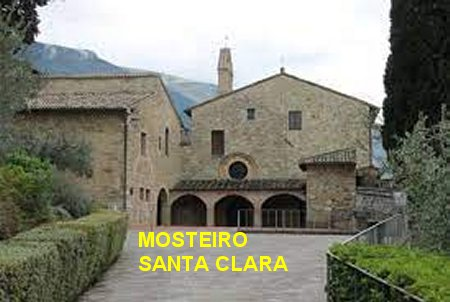
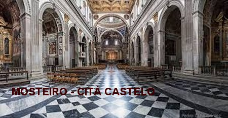
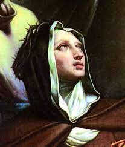

“FINALMENTE A CLAUSURA”
SEU PAI QUERIA QUE ELA SE CASASSE
Todavia, uma séria dificuldade
começou a se desenhar no horizonte da sua vida. Seu pai que estava numa condição
financeira privilegiada, e por isso, 
Ela ficou muito feliz com as palavras de seu pai. Mas as pessoas que serviam a família logo raciocinaram e perceberam que provavelmente aquela era uma manobra idealizada por ele. Todavia o plano dele permaneceu oculto.
VOLTARAM PARA MERCATELLO

Passaram-se três anos que ela e suas irmãs moravam com o pai em Piacenza. Mas ela com firmeza, havia desiludido a todos os pretendentes, que cheios de esperanças e apoiados pelo próprio pai das moças, queriam mesmo namorar e casar com elas, principalmente com Úrsula.
Certo dia à noite, o pai chamou as filhas para conversar; muito sério determinou que ela e as quatro irmãs voltassem para a casa do tio em Mercatello. Claro está que esse era o resultado da manobra elaborada por ele, com uma nova ofensiva, objetivando conseguir que sua filha não seguisse a vida religiosa. Como complemento, o pai escreveu uma carta para o irmão em Mercatello explicando a sua decisão e enviando instruções, mas ninguém ficou sabendo do conteúdo da missiva.
DUAS IRMÃS ENTRARAM NO CONVENTO 
Entretanto já instaladas em Mercatello, as duas irmãs mais velhas que já tinham elaborado seus projetos de vida, corajosamente entraram para o Convento de Santa Clara de Mercatello. Úrsula admirou e aplaudiu a iniciativa delas, mas permaneceu em grande melancolia, porque se sentia como se estivesse amarrada, sem poder realizar o seu ideal. E com isso, acabou adoecendo de uma moléstia muito estranha, que os médicos não conseguiam entender para receitar o medicamento adequado. As pessoas da casa que acompanhavam todos os acontecimentos raciocinaram e imaginaram que a moléstia de Úrsula devia ser mais de espírito do que do corpo. E então, fizeram um teste, começaram a conversar com ela a respeito de freiras e da vida no Convento, e observaram que esses assuntos lhe agradavam muito, e que começaram a lhe produzir um sensível alívio no estado da sua saúde.
O PAI QUERIA A LIBERDADE
Na verdade, o que aconteceu com o pai Francesco, que era um homem equilibrado espiritualmente e um cristão fervoroso, foi uma verdadeira transformação, a qual se iniciou com a morte da senhora Benedetta, sua esposa, e a chegada do belo salário no emprego em Piacenza. Por isso os parentes perceberam que o pai queria viver uma vida mais livre, e assim, desejava que todas as filhas se casassem, para gozar a sua liberdade em plenitude. Respeitosamente Úrsula quis aconselhar, com observações claras e evidentes, buscando alcançar os sentimentos dele, com palavras simples e apropriadas. Mas as oportunidades eram muito poucas. Por outro lado, o pai visando os seus interesses, mandou de volta as filhas para viver em Mercatello na casa do seu irmão, objetivando ter mais liberdade. Já não frequentava a Igreja com pontualidade e nem procurava a Confissão Sacramental.
A DOENÇA DE ÚRSULA
Todavia, com os acontecimentos atuais, tendo as duas filhas com mais idade abraçado a vida religiosa num Convento, e a forte melancolia revelada por Úrsula, que ainda ameaçava a sua saúde e poderia conduzi-la a morte, ele decidiu repensar as suas decisões. Arrependido do seu procedimento decidiu conceder oficialmente a Úrsula, a tão desejada licença para entrar no Convento. Assim sendo, por essa decisão, atestou que gostava muito da sua filha e não queria traumatizar a sua existência.

ALCANÇOU O SEU GRANDE PROJETO
Pouco tempo depois, no dia 17 de Julho de 1677, com 17 anos de idade autorizada pelo seu pai, Úrsula entrou na estreita clausura do Mosteiro das Clarissa Capuchinhas de “Città di Castello”, onde permaneceu durante toda a sua vida. O pai foi a “Città di Castello” fazer-lhe uma visita e confirmou-lhe, que as palavras dela tinham lhe servido de incentivo para se cuidar e viver uma existência mais cristã, e concluiu dizendo: “Filha, entrego-lhe a minha alma; tratai de socorrê-la durante a vida e depois da morte”.
RECEBE O TRAJE RELIGIOSO
No dia 23 de Outubro, Festa dos Apóstolos São Simão e São Judas Tadeu, tomou o hábito de religiosa das mãos do senhor Bispo Sebastiani, recitando na ocasião um bem elaborado discurso. Concluindo a cerimônia, o prelado encaminhou a postulante à Madre Abadessa Irmã Maria Gertrudes Albizzini. E foi nessa ocasião que de acordo com o costume, mudaram-lhe o nome de Batismo, colocando o nome de “Verônica”,que significa “verdadeira imagem” e, com efeito, ela se tornará de fato a verdadeira imagem de “CRISTO Crucificado”.
FALECIMENTO DE SEU PAI
Poucos anos depois, NOSSO SENHOR mostrou a Verônica em sonho, seu pai gravemente enfermo. Ela acordou assustada e fervorosamente encomendou a alma dele ao SENHOR DEUS. Na noite seguinte, voltou a sonhar com o pai e viu-o agonizante e finalmente ele expirou. Acordou assustada e comentou o fato com as outras Irmãs do Convento. Elas procuraram acalmá-la argumentando que podia ser apenas um sonho. Entretanto mais alguns dias depois, ela recebeu a confirmação de que seu pai havia falecido. Ela de imediato, começou a rezar grandes orações em beneficio da alma dele, e NOSSO SENHOR misericordiosamente se dignou escutá-las.
E para ela conhecer a gravidade dos pecados cometidos pelo pai, NOSSO SENHOR lhe mostrou um lugar horrendo no Purgatório onde inicialmente ele estava. Verônica chorou muito e começou com muitas orações, fazendo severas penitências que verdadeiramente ajudaram; mas teve que fazer penitências mais fortes e mais longas para alcançar a liberdade para o seu pai. Na Festa de Santa Clara ainda viu a alma dele no Purgatório, não naquele lugar terrível onde estava no início, mas ainda num local com razoável sofrimento. Ela não desanimou, continuou fervorosa com suas orações e penitências, praticamente sem qualquer descanso. O SENHOR lhe deu a entender que no Natal ele estaria livre. De fato, na noite de Natal ela estava rezando na Capela do Convento, e de repente viu seu pai no Purgatório, e em seguida viu um Anjo pegar-lhe pela mão e caminharam. Ele olhou na minha direção e sinceramente agradeceu as orações e os sacrifícios; de repente ele se transformou numa grande luz; não o vi mais em figura humana. Essa graça final me foi alcançada pela SANTÍSSIMA VIRGEM MARIA. O fato me foi confirmado no mesmo dia mais tarde. No dia seguinte, na Santa Missa da manhã, depois da Sagrada Comunhão, eu vi a alma de meu pai resplandecente e bela, sorrindo para mim.
“Minha emoção foi muito grande e as lágrimas desceram de meus olhos”.
SOLENE PROFISSÃO DE FÉ

Tendo ela, ao longo do ano revelado muitas provas de virtudes e esperanças, as religiosas não tiveram dúvidas em admiti-la fazer a sua Profissão Solene de Fé. O fato aconteceu no dia da Festa de Todos os Santos, 02 de Novembro de 1678, quatro dias depois de ter concluído o seu Noviciado.
TENTAÇÃO DEMONÍACA
Ao longo da sua existência a Irmã Verônica sempre aproveitou todos os momentos, para louvar e amar a DEUS, através das palavras, por orações e também com o seu próprio exemplo no quotidiano, ou realizando sacrifícios em beneficio de pessoas necessitadas. Este procedimento deixava satanás louco e nervoso, com muito ódio dela, e assim o terrível animal das trevas ficava na espreita de oportunidades para desforrar as suas decepções. Certo dia, a Irmã Verônica levava para a Biblioteca do Mosteiro seis livros grossos na mão direita e apoiados no seu corpo, e na mão esquerda, uma lamparina de vidro com azeite. O terrível animal esperou Verônica se aproximar da escada e no instante certo, deu-lhe um forte empurrão. A Irmã rolou 12 degraus até chegar embaixo, mas amparada pelo seu Anjo da Guarda não teve gravidade. Mantinha a lamparina nas mãos, e ajoelhada aos pés da escada recolheu os livros e mesmo com o corpo dolorido com a queda, arrumou-os na prateleira da Biblioteca e guardou a lamparina (tudo sem dizer uma única palavra, em completo silêncio). Depois caminhou até a Capela do Mosteiro e diante do Sacrário fechado, rezou agradecendo a proteção de JESUS.
Na verdade, ao longo da sua vida religiosa sofreu muitos insultos do demônio, mas também recebeu dezenas de graças muito especiais do SENHOR DEUS.